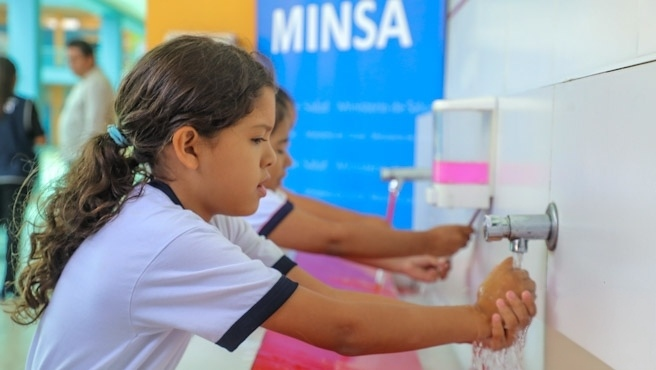
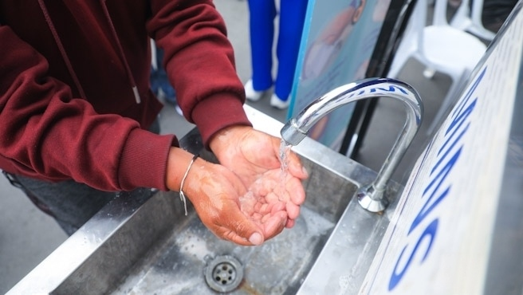
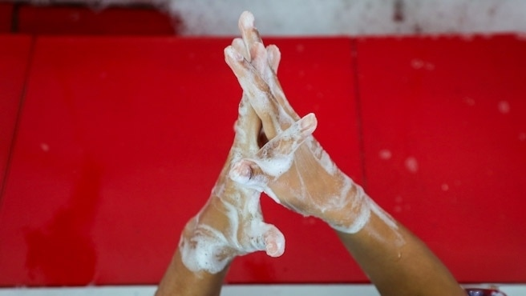

El Minsa recomienda medidas simples como el lavado de manos, el consumo de alimentos seguros y el uso correcto de mascarilla para proteger a niños y adultos mayores.

Fuente: Ministerio de Salud (Minsa).
Ante los riesgos sanitarios asociados al fenómeno El Niño, el Ministerio de Salud (Minsa) difundió recomendaciones prácticas para prevenir las infecciones respiratorias agudas y las enfermedades diarreicas agudas, dos problemas que suelen aumentar en temporadas de cambios climáticos y que afectan con mayor fuerza a niños, adultos mayores y personas con defensas bajas.
La buena noticia es que muchas de estas enfermedades pueden evitarse con hábitos sencillos en casa: lavarse las manos correctamente, manipular bien los alimentos, mantener la hidratación y reconocer las señales de alarma a tiempo. Estas acciones, aplicadas de forma constante, ayudan a proteger la salud de toda la familia.
Los especialistas del Minsa destacan que el lavado de manos con agua y jabón es una de las herramientas más eficaces para eliminar virus y bacterias. Debe realizarse antes de preparar o consumir alimentos, después de ir al baño, al regresar de la calle y antes de atender a un bebé.
No se necesita un jabón especial: cualquier jabón es útil si se frota bien las palmas, el dorso, entre los dedos y debajo de las uñas durante al menos 20 segundos. Cuando las manos no tienen suciedad visible y no hay agua disponible, el alcohol en gel puede ser una alternativa temporal.

El lavado de manos frecuente es clave para cortar la cadena de transmisión de virus y bacterias.
Las infecciones respiratorias se transmiten con facilidad cuando se tose, estornuda o se toca superficies contaminadas y luego la cara. Para reducir el riesgo, el Minsa recomienda:
La mascarilla debe cubrir completamente nariz y boca, y debe cambiarse cuando esté húmeda, sucia o deteriorada. Su uso es especialmente importante cuando hay síntomas respiratorios para evitar contagiar a otras personas.
Las enfermedades diarreicas suelen estar relacionadas con el consumo de agua o alimentos contaminados. Para prevenirlas, es fundamental cuidar la higiene en la cocina y en la mesa:

Consumir alimentos bien cocidos y agua segura ayuda a prevenir enfermedades diarreicas.
El Minsa exhorta a prestar especial atención a niños menores de cinco años y adultos mayores de 60. En los niños, se debe buscar atención inmediata si hay diarrea con decaimiento, somnolencia, rechazo de alimentos, dificultad para beber líquidos, fiebre persistente, dificultad para respirar o signos de deshidratación.
En adultos mayores, la somnolencia, los cambios repentinos de conducta y la disminución del consumo de líquidos también son señales de alerta, incluso sin fiebre. La hidratación oportuna y la consulta temprana pueden evitar complicaciones graves.
Además, el sector recordó que los bebés menores de seis meses deben recibir lactancia materna exclusiva, una medida fundamental para fortalecer sus defensas. Cuidar la higiene, los alimentos y el agua es una forma simple y poderosa de proteger a la familia ante el fenómeno El Niño.